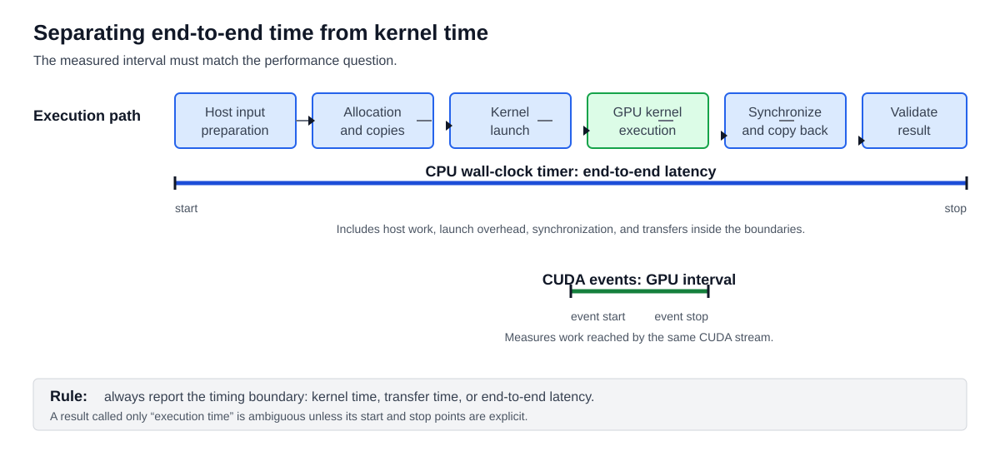

Learning outcomes
Scope
By the end of this module, you should be able to time a GPU workload from both the host and device perspective, explain what each measurement includes, and use evidence to decide whether a program is limited by compute, memory traffic, transfers, synchronization, or application structure.
1. Performance Metrics, Timing, and Bottleneck Analysis
1.1 Performance metrics and bottleneck diagnosis
Performance measurement is not limited to asking how many milliseconds a kernel takes. A useful evaluation connects elapsed time to the amount of work completed and to the hardware resource that limits progress. The main metrics are execution time, throughput, speedup, effective memory bandwidth, arithmetic intensity, occupancy, and utilization.
Execution time is the direct latency of a kernel or complete application interval. Throughput expresses how much work is completed per unit of time, such as elements per second, images per second, requests per second, GFLOP/s, or tokens per second. Speedup compares a baseline with an optimized or GPU implementation: speedup = baseline time / new time. These metrics must compare the same input, output, and correctness requirements.
Memory behavior as a metric
Effective bandwidth estimates how much useful data movement the kernel achieves:
effective bandwidth = useful bytes moved / elapsed timeCompare this value with the device's peak bandwidth, but do not treat the peak as a guaranteed result. Adjacent threads should access nearby data whenever possible: coalesced accesses require fewer memory transactions and make better use of available bandwidth. Poor layout or access order can leave a mathematically parallel kernel far below the hardware ceiling.
Latency hiding and occupancy
GPU threads can wait for memory or other long-latency operations while the scheduler runs another ready warp. Occupancy describes how many active warps can reside on an SM relative to its hardware limit, so it is a useful indication of scheduling capacity. It is not a performance score by itself: high occupancy does not guarantee a fast kernel if the access pattern, instruction mix, or bottleneck is poor. Warp stalls, achieved occupancy, and utilization help explain whether the GPU has enough ready work to hide latency.
Thread coarsening
Thread coarsening assigns more than one output element or unit of work to each thread. It can reduce redundant work, improve data reuse, or reduce scheduling and indexing overhead. It also reduces the number of independent threads and may increase register pressure, so it can lower occupancy or make latency harder to hide. Coarsening is therefore a measured trade-off, not a universal optimization.
A practical performance workflow is to measure first, identify the limiting resource, apply an optimization that targets that resource, and measure again. A kernel dominated by memory traffic needs a different intervention from one limited by instruction throughput, synchronization, insufficient latency hiding, or host-device transfers. Optimizing a non-limiting resource may produce no meaningful application speedup.
These metrics form a complete starting point for performance analysis: define the workload, measure the relevant interval, compare achieved values with the appropriate hardware ceiling, identify the bottleneck, and verify both correctness and speedup after every change.
1.2 Using CPU timers with asynchronous CUDA work
A CPU wall-clock timer can measure a CUDA call or kernel launch, but CUDA execution is often asynchronous with respect to the host. A kernel launch and an asynchronous memory copy can return control to the CPU before the GPU has completed the work. If the timer stops immediately after the call, it measures submission time rather than completed GPU execution.
To measure a CUDA interval with a CPU timer, synchronize immediately before starting the interval and immediately after the last CUDA operation:
cudaDeviceSynchronize();
start = host_timer();
kernel<<<grid, block>>>(...);
cudaDeviceSynchronize();
stop = host_timer();cudaDeviceSynchronize() blocks the calling CPU thread until previously issued work on the device is complete. A stream or event synchronization can target a narrower piece of work, but the timing boundary must still wait for the operations being measured. Synchronization is useful for correct measurement, but it introduces a CPU stall and should not be inserted into a performance-critical application more often than necessary.
Use a CPU timer when the question is end-to-end application cost: input preparation, memory transfers, kernel submission, synchronization, and result handling can all be included deliberately. In PyTorch, the equivalent boundary is torch.cuda.synchronize(). The complete C++ and Python examples are available in examples/ch05/cuda_cpu_timers. For device-side kernel timing, use CUDA events as described in M5.1.3 instead.
This treatment follows NVIDIA CUDA C++ Best Practices Guide, 9.1.1 Using CPU Timers.
1.3 Using CUDA GPU Timers
CUDA events measure elapsed time on the GPU timeline. They are useful when the question is how long a kernel, an asynchronous device copy, or a sequence of operations takes after it has been submitted to a CUDA stream. This avoids confusing the short CPU launch time with the actual time spent executing on the GPU.
Create two events, record the first before the workload and the second after it in the same stream. The GPU records each event when it reaches that point in the stream. The elapsed time is therefore the device-side interval between the two recorded positions.
CUDA C++ implementation
cudaEvent_t start_event, stop_event; cudaEventCreate(&start_event); cudaEventCreate(&stop_event); cudaEventRecord(start_event, 0); workKernel<<<grid, block, 0, 0>>>(...); cudaEventRecord(stop_event, 0); // Wait until the stop event has been reached by the GPU. cudaEventSynchronize(stop_event); float elapsed_ms = 0.0f; cudaEventElapsedTime(&elapsed_ms, start_event, stop_event); cudaEventDestroy(start_event); cudaEventDestroy(stop_event);The 0 stream argument selects the default stream. In a multi-stream program, pass the workload's stream to cudaEventRecord and launch the kernel in that same stream. Synchronizing the stop event is sufficient to make the measured result available; a full device synchronization is not required just for reading this interval.
PyTorch implementation
start_event = torch.cuda.Event(enable_timing=True); stop_event = torch.cuda.Event(enable_timing=True); start_event.record(); output = model_step(inputs, weights); stop_event.record(); stop_event.synchronize(); elapsed_ms = start_event.elapsed_time(stop_event); print(f"GPU time: {elapsed_ms:.3f} ms")PyTorch records these events on the current CUDA stream. If the workload uses a custom stream, record the events inside that stream's context so that the timestamps surround the intended operations.
CUDA event timing measures the device interval between the events. It does not automatically include CPU preprocessing, Python or C++ launch overhead, host-to-device transfers recorded outside the interval, or result processing on the host. Use a synchronized CPU timer when the goal is end-to-end application latency; use CUDA events when the goal is to isolate GPU work.
Run a warm-up before collecting measurements, repeat the workload several times, and report an average or a distribution rather than a single result. The first execution may include one-time costs such as initialization, memory allocation, library selection, or compilation. Event timing is precise for short GPU intervals, but it does not remove normal scheduling variability or make an incorrectly placed event meaningful.
The complete runnable implementations are available in examples/ch05/cuda_gpu_timers. The section follows NVIDIA CUDA C++ Best Practices Guide, 9.1.2 Using CUDA GPU Timers.
1.4 Separating total execution time from kernel time
A useful benchmark begins by defining exactly what is being measured. A complete application interval may include input preparation, device-memory allocation, host-to-device transfers, kernel launch, GPU execution, synchronization, device-to-host transfers, and result validation. The kernel interval is only the period in which the GPU executes the kernel body. These are both valid measurements, but they answer different questions.

Read the diagram from left to right as one possible end-to-end path. A CPU timer placed around the whole path reports application-visible latency. A CPU timer around only the kernel launch is incorrect unless it waits for completion, because the launch is normally asynchronous. CUDA events placed immediately before and after the kernel report the GPU-side interval without automatically including the surrounding host work and transfers.
Step 1: define the question
Decide whether you need end-to-end latency, transfer time, kernel execution time, or a breakdown of all stages. Write down the start and stop boundaries before writing the benchmark.
Step 2: measure the complete path
Use a synchronized CPU timer when the user-facing question is “how long does this operation take?” Include only the stages that belong to that operation, and keep allocation and initialization explicit rather than accidentally mixing them into every iteration.
Step 3: isolate the kernel
Use CUDA events in the same stream as the kernel. Record the start event before the launch, record the stop event after the launch, wait for the stop event, and read the device elapsed time. This identifies the cost of GPU execution more directly.
Step 4: compare the components
Subtracting kernel time from end-to-end time gives an indication of surrounding overhead, but it is not automatically a complete diagnosis. Transfers may overlap with computation, multiple kernels may be launched, and synchronization may wait for earlier work. Measure each important stage when the path is more complex.
Step 5: repeat and validate
Warm up the program, repeat the same workload, report an average or percentile, and verify the output. A fast measurement of an incorrect result is not an optimization.
The practical rule is to report the boundary with every timing result: “kernel time,” “host-to-device copy time,” and “end-to-end latency” are meaningful labels; “execution time” without a boundary is ambiguous.
1.5 Identifying a memory-bandwidth bottleneck
A memory-bandwidth bottleneck occurs when the workload is limited by the rate at which data can be read from or written to memory rather than by the number of arithmetic instructions. This is common for vector addition, copies, simple transformations, and kernels that repeatedly access global memory. The first diagnostic is to compare the bandwidth the kernel actually achieves with the device's theoretical peak.
Theoretical bandwidth
The theoretical peak is calculated from hardware specifications:
peak bandwidth = memory clock rate * (memory interface width / 8) * data-rate factorThe interface width is converted from bits to bytes, and the data-rate factor is typically 2 for double-data-rate memory. Keep units consistent: use either decimal GB/s with 10^9 or binary GiB/s with 1024^3 for both peak and measured values.
Effective bandwidth
Effective bandwidth uses the useful bytes requested by the kernel and the measured kernel time:
effective bandwidth = ((bytes read + bytes written) / 10^9) / time_secondsFor a vector addition with N single-precision elements, the useful traffic is approximately N * 4 bytes read from each input plus N * 4 bytes written to the output, or N * 12 bytes in total. The time must be the kernel time measured with CUDA events, not an unsynchronized CPU launch time.
For example, if a vector-add kernel processes 1,000,000 floats in 0.0002 seconds, its useful traffic is 12,000,000 bytes and its effective bandwidth is:
((1,000,000 * 12) / 10^9) / 0.0002 = 60 GB/sThis value is not automatically a problem. Compare it with the appropriate hardware ceiling and inspect the access pattern. A large gap can come from uncoalesced accesses, wasted memory transactions, poor locality, insufficient parallelism, synchronization, cache effects, or a workload too small to reach steady state.
Requested versus actual traffic
Requested bandwidth counts the bytes the kernel logically asks for. Actual memory throughput can be higher because the hardware transfers complete memory transactions, including bytes that the kernel does not use. Comparing requested traffic with actual traffic reveals wasted bandwidth caused by inefficient or uncoalesced accesses. High requested-to-actual efficiency is therefore an important clue that the memory layout and access order are sound.
Diagnostic workflow
- Measure the kernel interval with CUDA events after a warm-up.
- Count the bytes read and written by one kernel invocation.
- Calculate effective bandwidth using the measured time.
- Compare it with the theoretical peak and, when profiling, with requested and actual global-memory throughput.
- If the gap is large, inspect coalescing, data layout, stride, redundant loads, occupancy, and synchronization before changing arithmetic instructions.
- Apply one memory-focused change and measure again on the same workload.
Bandwidth is a bottleneck indicator, not a universal target. If effective bandwidth is already high while the kernel is slow, the limiting resource may instead be instruction throughput, latency, synchronization, or insufficient parallel work. The optimization must address the resource that the measurements identify.
This treatment follows NVIDIA CUDA C++ Best Practices Guide, 9.2 Bandwidth.
2. Guided Exercises
2.1 Timing exercise
Measure one GPU workload twice: first with a host wall-clock timer and then with CUDA events. The primary implementation uses CUDA C++. The equivalent PyTorch implementation is shown after it, so the same measurement principles can be applied in both environments. The host-timer version must synchronize before starting and after the final CUDA operation:
cudaDeviceSynchronize();
auto start = std::chrono::steady_clock::now();
workKernel<<<grid, block>>>(...);
cudaDeviceSynchronize();
auto stop = std::chrono::steady_clock::now();
double elapsed_ms = std::chrono::duration<double, std::milli>(stop - start).count();For device-side timing, record events in the same CUDA stream as the workload:
cudaEvent_t start_event, stop_event;
cudaEventCreate(&start_event);
cudaEventCreate(&stop_event);
cudaEventRecord(start_event, 0);
workKernel<<<grid, block, 0, 0>>>(...);
cudaEventRecord(stop_event, 0);
cudaEventSynchronize(stop_event);
float elapsed_ms = 0.0f;
cudaEventElapsedTime(&elapsed_ms, start_event, stop_event);PyTorch implementation
The same host-timer rule can be expressed through PyTorch's CUDA API:
torch.cuda.synchronize()
start = time.perf_counter()
output = model_step(inputs, weights)
torch.cuda.synchronize()
elapsed_ms = (time.perf_counter() - start) * 1000- Measure one workload with a CPU timer and again with CUDA events.
- Explain why a timer placed immediately around a CUDA operation without synchronization underreports execution time.
- State what each measurement includes and excludes: the CPU timer can include synchronization and application overhead, while CUDA events measure the device interval between recorded events.
- Explain why synchronization is necessary for correctness but should not be added repeatedly to the production execution path.
2.2 Measuring memory movement
Use examples/ch05/memory_bandwidth_measurement to measure a simple CUDA copy kernel. This exercise introduces the measurement workflow without requiring any knowledge of coalesced or strided accesses; those access-pattern concepts are developed in M6.
Step 1: compile and run
cd examples/ch05/memory_bandwidth_measurement
nvcc memory_bandwidth_measurement.cu -O3 -lineinfo -o memory_bandwidth_measurement
./memory_bandwidth_measurement 16777216 20Record the average kernel time, useful traffic, and effective bandwidth. The program measures only the copy kernel after a warm-up, using CUDA events.
Step 2: inspect the timeline with Nsight Systems
nsys profile --trace=cuda --stats=true --force-overwrite=true \
-o memory-bandwidth-nsys ./memory_bandwidth_measurement 16777216 5
nsys-ui memory-bandwidth-nsys.nsys-repLocate the memory-copy kernel and the surrounding CUDA API calls. Separate allocation, initialization, kernel execution, event synchronization, and cleanup. Nsight Systems answers when the work happens and which host operations surround it.
Step 3: inspect the kernel with Nsight Compute
ncu --set full --kernel-name regex:'^copyKernel' \
--launch-skip 1 --launch-count 1 --force-overwrite \
-o memory-bandwidth-ncu ./memory_bandwidth_measurement 16777216 5
ncu-ui memory-bandwidth-ncu.ncu-repRead Launch Statistics, GPU Speed Of Light Throughput, and Memory Workload Analysis. Compare the profiler's kernel duration with the program's CUDA-event duration and locate the available memory-throughput metrics.
- Calculate useful traffic as
count * sizeof(float) * 2: one read and one write per element. - Calculate effective bandwidth and compare it with the GPU's theoretical peak.
- Use Nsight Systems to distinguish kernel time from host orchestration and synchronization.
- Use Nsight Compute to identify where memory-throughput metrics are shown for the kernel.
- Repeat with a larger element count and explain whether fixed overhead is being amortized.